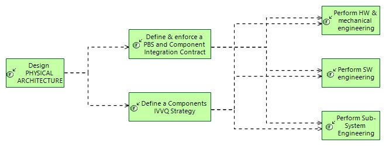

From System to Sub-systems, SW, HW
Engineering Process
Engineering Capabilities > Support Collaboration in Engineering > From System to Sub-systems, SW, HW
Challenge: How to specify expectations on sub-systems, software (SW) and hardware (HW) to contribute to the solution development and building .
- Build the solution architecture in co-engineering between system, sub-systems/SW/HW teams, and specialities/disciplines.
- Once a consensus is built, and its hypotheses checked by all stakeholders, extract the specification of each sub-system/SW/HW part from the solution architecture
- Define the contribution of each part and team to IVV strategy and test cases the same way, and add IVV expectations to the parts specification
Related Diagrams
5 From System to Subsystems SW HW

This figure describes
How to specify expectations on sub-systems, software (SW) and hardware (HW) to contribute to the solution development and building .
- Build the solution architecture in co-engineering between system, sub-systems/SW/HW teams, and specialities/disciplines.
- Once a consensus is built, and its hypotheses checked by all stakeholders, extract the specification of each sub-system/SW/HW part from the solution architecture
- Define the contribution of each part and team to IVV strategy and test cases the same way, and add IVV expectations to the parts specification
For each step of this process, involving an engineering task or activity, the description gives some hints and methological recommendations. These recommendations are complementary with the description of the involved activity per se, in the context of the engineering concern and the process.
Contribution of each engineering activity to this process
| Engineering activity | Specifics of activity for this process |
|---|---|
|
|
The solution architecture design results in the definition and description of components, their functional contents and behaviour, their interfaces, allocated functional chains and scenarios, resources, etc. plus textual requirements describing or complementing them. This is the main input to defining the need of each sub-system, SW or HW item, as a (set of) component(s). |
|
|
As mentioned in 'Design Solution Architecture',the specification contract of each sub-system, software or hardware item is mostly extracted from the system architecture : description of components, their functional contents and behaviour, their interfaces, allocated functional chains and scenarios, resources, etc. plus textual requirements describing or complementing them. This is a contribution to EPBS (End-Product Breakdown Structure) building, taking benefits from the former architectural work, to enforce components requirements definition, and prepare a secured IVVQ. All choices associated to the system/SW chosen architecture, and all hypothesis and constraints imposed to components and architecture to fit need and constraints, are summarised and checked here. Outputs from this step are mainly “component Integration contract” collecting all necessary expected properties for each component to be developed, and building & IVVQ Strategy. |
|
|
The definition of the system-level IVV Strategy usually includes delegating part of verifications to sub-systems, when appropriate and confinable into one (possibly more) of them. The specification of delegated tests and verifications uses mainly allocation of all or parts of system-level functional chains and scenarios to sub-systems. |
|
|
Hardware and mechanical engineering initial tasks (such as need analysis, general architecture, integration and verification policy, etc.) may be similar to the system-level one, properly adapted, tuned and taylored. |
|
|
Software engineering structuring tasks (such as need analysis, general architecture, integration and verification policy, etc.) may be similar to the system-level one, properly adapted, tuned and taylored. Specific software-related issues such as agile practices can also benefit from the system approach. See 'Agility in engineering course'. |
|
|
Sub-system engineering structuring tasks (such as need analysis, general architecture, integration and verification policy, etc.) may be similar to the system-level one, properly adapted, tuned and taylored. |